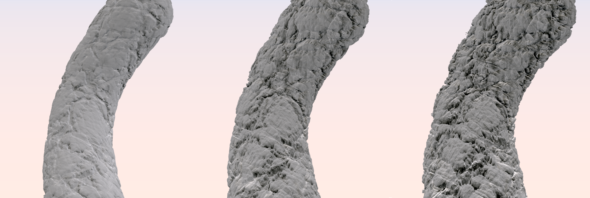

Axel Paris - PhD Student in Computer Graphics
Home
Publications
Resume
Email
Twitter
Detail Synthesis for Distance Fields and Blobs
May 3, 2020.
Adding details to implicit surfaces, whether they are defined as distance fields or blob construction trees,
has been a challenging problem for many years. As opposed to meshes, implicits do not provide an explicit parameterization of the surface.
This prevents the use of classic displacement maps used on mesh models, which are based on texture mapping: the process of applying a 2D image
to a 3D surface.
Traditionally, adding details to implicits is done by modifying the scalar field with 3D noise using blending or classic CSG operators. You can see many
examples of this in Shadertoy: here or here just to name a few.
While such technique can theoretically add infinite details, the self-similar appearance of the noise function used is limitating.
Futhermore, adding 3D noise everywhere in the scalarfield may create disjoint fragments in the object, often referred to as floating parts, and usually
not desired.
In our paper about block fracturing, we show how to use a popular technique in computer graphics which
is triplanar mapping, and apply it to implicits to increase the level of detail of the shape while retaining control for the designer. The proposed method
has the advantage of offering on-the-fly parameterization of the implicit function.
Triplanar mapping
While trying to find citable references for triplanar mapping when we were writing the paper, I was surprised to find out that it was almost never discussed
in academic research. I suspect this is the case because the technique comes from the industry - but this is still surprising since triplanar mapping is used
everywhere in computer graphics. The only citable reference of the method that we could find is from
an article in GPU Gems
3 by Ryan Geiss. On the other hand, there are some good blog articles on the web that explain triplanar mapping in details and provide examples such as
Catlike Coding and Martin Palko.
The idea behind triplanar mapping is to use the world space position of a point `\mathbf{p}` and its normal `\mathbf{n}` to determine a parameterization in 2D space.
This has a big advantage: the surface you are trying to map to the texture does not need an explicit parameterization, which is perfect for implicits. The final texture
contribution `T \quad : \mathbb R^3, \mathbb R^3 \rightarrow \mathbb \R^3` at a given point `\mathbf{p}` and normal `\mathbf{n}` can be defined as:
`T(\mathbf{p}, \mathbf{n}) = \sum_{i=0}^{3} \alpha_i(\mathbf{n}) \cdot t \circ \gamma_i(\mathbf{p})`
The weighting function `\alpha_i` computes the contribution of each mapping of `\mathbf{p}` according to the dot product between the normal and the unit axis-aligned vectors:
`\alpha_i(\mathbf{n}) = | \mathbf{n} \cdot u_i |`. The function `\gamma_i \quad : \quad \mathbb R^3 \rightarrow \mathbb R^2` computes the projection of `\mathbf{p}` on the i-th plane in world space
and finally, the function `t` denotes the 2D function we want to map to our surface, and can be anything from a baked texture to a procedural sum of noises.
The function `T(mathbf{p}, \mathbf{n})` can be used directly to texture a implicit surfaces with albedo, as shown in the following figure:
 Implicit spheres textured using triplanar mapping. Rendering was performed using Sphere Tracing.
Implicit spheres textured using triplanar mapping. Rendering was performed using Sphere Tracing.
While using triplanar mapping to compute albedo is pretty straightforward even for implicit surfaces, it is not the case for triplanar displacement whose goal is to modify
the geometry of the shape itself. When working with implicits, the equivalent for displacement is called warping.
Warping an implicit surface
A warp is defined as a domain deformation and is widely used in computer graphics: for instance, image warping is commonly found in filters of messaging apps such as Snapchat to make
your pictures look weird; in texture synthesis, warping is an essential tool to create procedural textures; and in implicit modeling, warping is used to create more interesting
shapes as it deforms the local space around a point to create new features.
In essence, a 3D warp is a mapping `\mathbb R^3 \rightarrow \mathbb R^3`. Any deformation is theoretically possible: translation, rotation, bending, twisting...
You can find a listing here.
Back to our problem: what we want is the ability to deform our implicit function `f \quad : \mathbb R^3 \rightarrow \mathbb \R^3` using triplanar warping. To do so, we will treat the information of our function `T` not as a color,
but as a displacement strength. As for the warping direction, we use the normal direction `n` from which we computed our weighting coefficients
in the last section. The warping function `w` can then be defined as:
`w(\mathbf{p}) = \mathbf{p} - \mathbf{n} \cdot T(\mathbf{p}, \mathbf{n}) `
Then, the final implicit function `\tilde{f}` can be defined as the composition of the base shape function `f` and the warping operator:
`\tilde{f}(p) = f \circ w(p)`
In the paper, we call this operator gradient-based warping because it requires the evaluation of the gradient of the underlying implicit function `f`. For the warping
operator to work, a correct gradient `\nabla f` must be computed first. The following images shows a serie of sphere warped using various textures - you can see the clear improvement
in terms of geometric details.
 Implicit spheres warped with different textures, rendering using sphere tracing and no albedo texture.
Implicit spheres warped with different textures, rendering using sphere tracing and no albedo texture.
Up to this point and if you read the paper, you probably didn't learn much. All of this is explained in a more compact (and most likely less friendly due to page limit) way in the paper - except
for the new renderings. But there are a few more interesting things that we can discuss that hopefully will provide value to the reader.
Lipschitz Bound and Sphere Tracing
There are two popular way to extract a rendering out of implicit surfaces: polygonization through algorithms such as marching cubes, and ray marching. There are different advantages
and disadvantages to both of these methods and I will not go into details - to me, it is a matter of whatever fits your pipeline best. In this post, we will discuss the second option: ray marching.
There are different subtypes of raymarching - and the one we are interested in is called sphere tracing. A great introduction to the technique is available
here. In this section, we will compute a global Lipschitz bound of our gradient-based warping operator to ensure that sphere tracing remains correct and does not miss the surface of our
object. First, we define the gradient `\nabla\tilde{f}` from the definiton of our implicit function `\tilde{f}`:
`\tilde{f} = f \circ w`
`\nabla \tilde{f}=\nabla(f \circ w) = \nabla f \circ w \cdot J_w`
We compute the Lipschitz bound by bounding the gradient of the field function `f` and the Euclidean norm of the Jacobian matrix `J_w`:
`||\nabla(f \circ w)|| \le ||\nabla f \circ w || \quad || J_w\||`
Performance
If you have worked on implicit modeling, you probably know that while it can be a powerful modeling framework, it can also be inconvenient for performance reason. A complex
scene featuring warping, sophisticated blending operators and curve primitives can be difficult to edit interactively. Warping especially can drastically lower performance, so it seems interesting to measure
the actual overhead of our gradient-based operator. Because we use a special kind of triplanar mapping, we also have an overhead as compared to a single texture fetch of traditional mesh pipelines.
The following table reports the time needed to evaluate signed distance field primitives for a hundred million calls, which is something that can happen when you compute the isosurface of your implicit function
using marching cubes for example:
| Primitive |
Time (ms) |
| Sphere |
525 |
| Sphere + Warping |
8314 |
| Quadric Curve |
8594 |
| Quadric Curve + Warping |
68982 |
| Box |
1991 |
| Torus |
1183 |
As you can see, rhe cost of evaluating our gradient-based warping operator is approximately equivalent to the one of a quadric curve, which is pretty slow. This is one of the reason why we advocate using this operator as a final step
of post-processing in your modeling pipeline - most of the geometry in your scene should not be made using the operator, but rather with traditional implicit primitives and operators: spheres, cylinders
and blending, CSG operators. Operations such as warping or adding noise function should be done in a second time.

Implicit curve primitive warped using our gradient-based operator with different warping strength.
Limitations and Conclusion
A better, local lipschitz bound could be computed for our warping operator - therefore allowing the use of segment tracing to improve rendering times.
References
Wyvill - The Blob Tree - Warping, Blending and Boolean Operations
ScratchAPixel - Rendering Distance Fields
Ryan Geiss - Generating Complex Procedural Terrains Using the GPU - GPU Gems 3
Inigo Quilez - 3D Distance functions